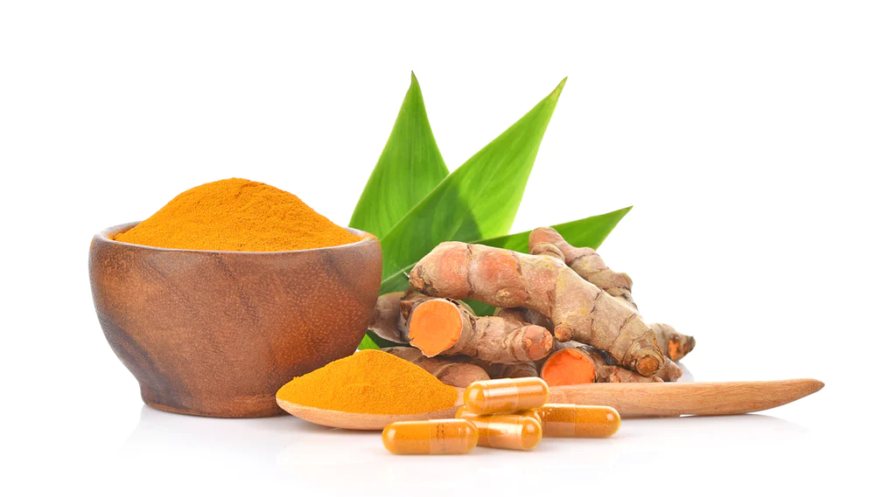
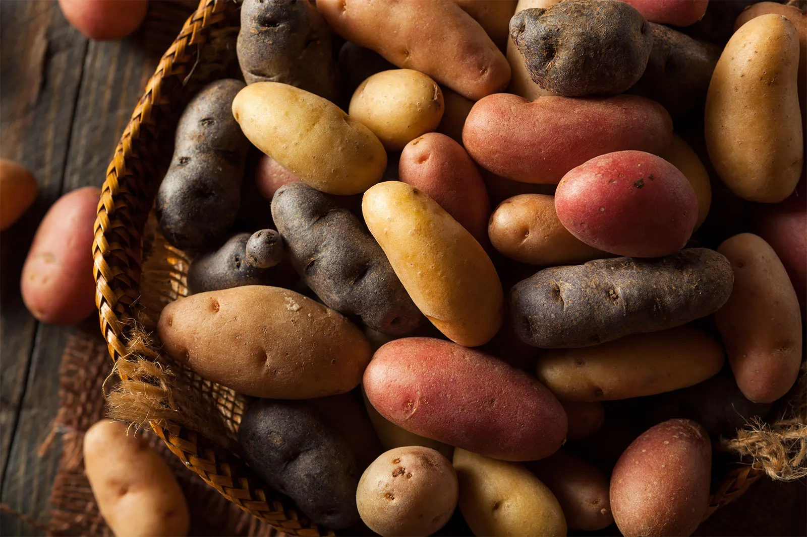
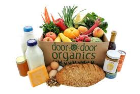
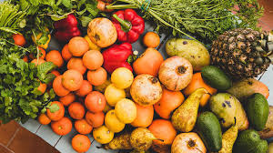
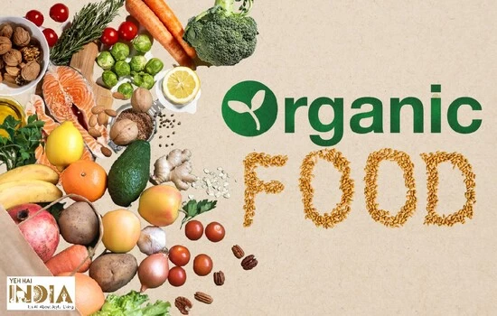
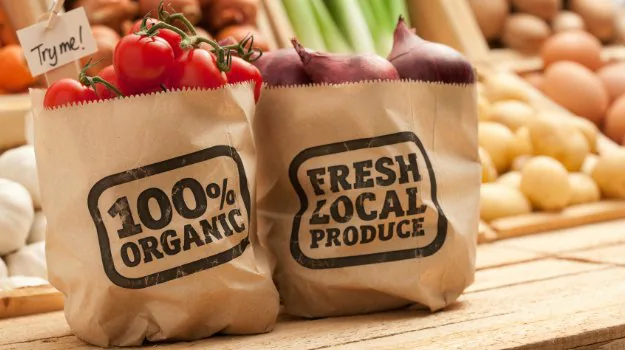
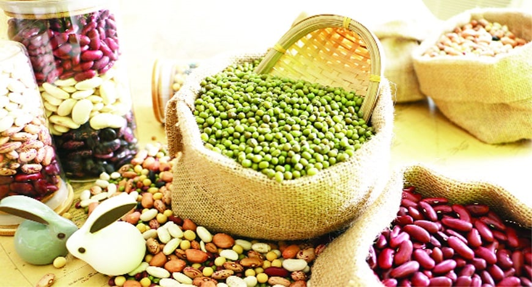
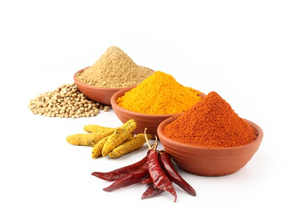
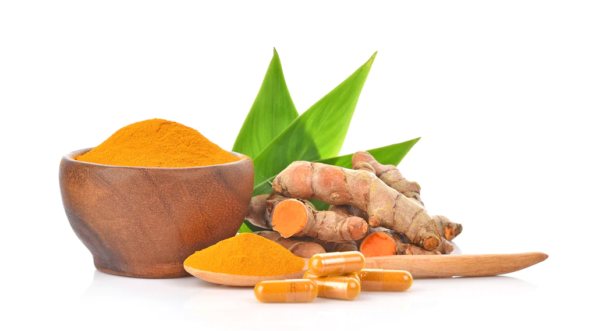
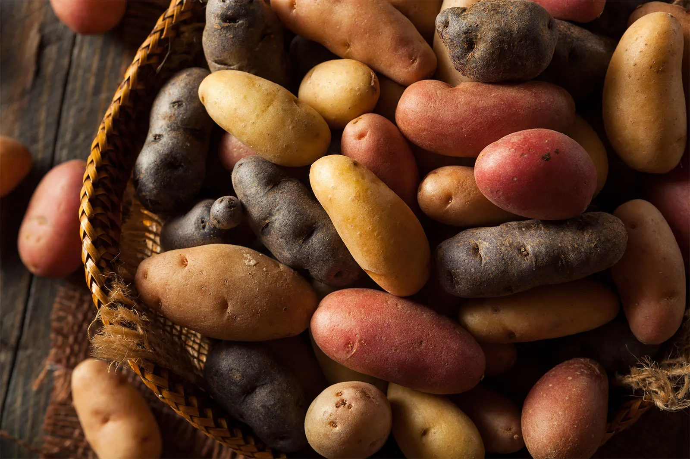
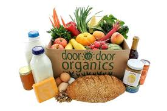
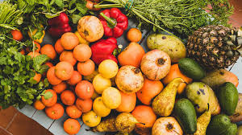
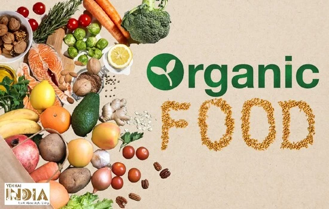
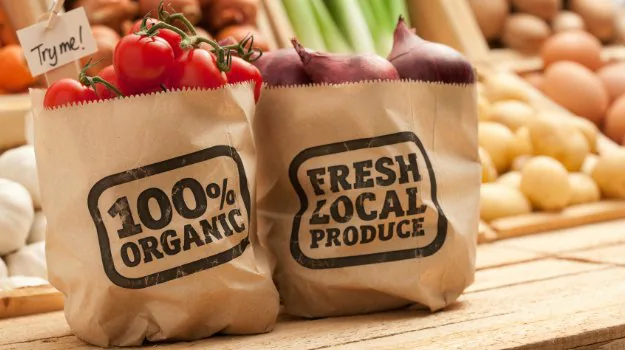
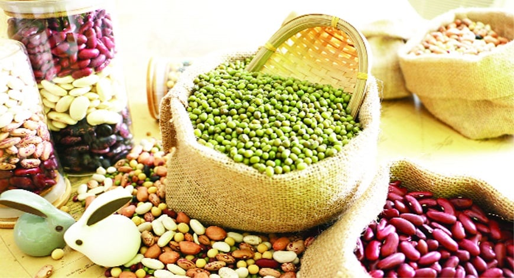
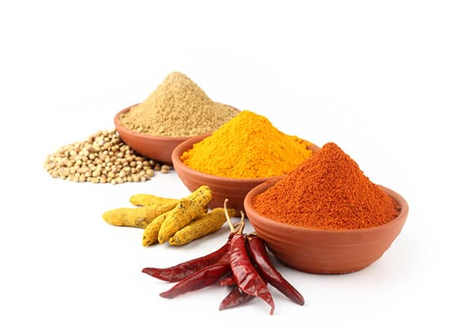
 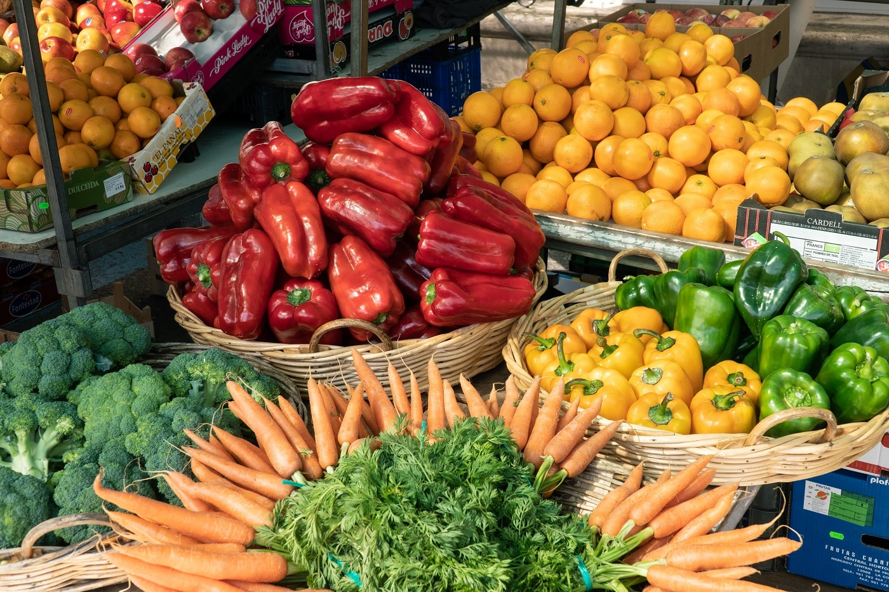
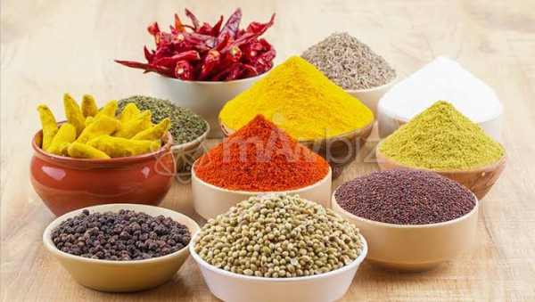
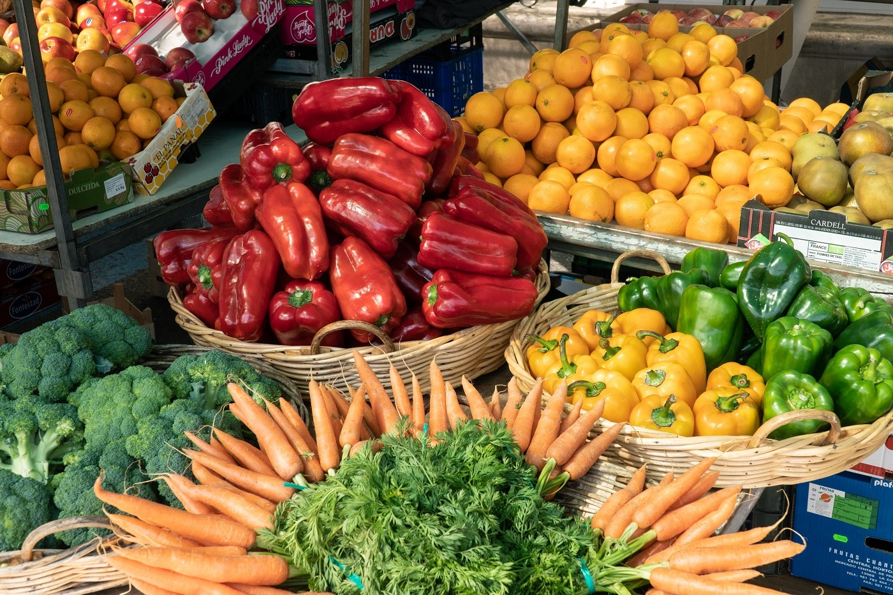
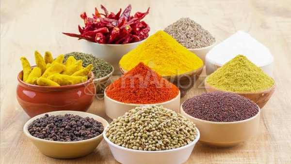
A & A Organic Farms sells and markets certified organic produce, representing small to mid-size farms. With over three decades of experience serving farmers, we specialize in sales and distribution, assist growers with crop plans, package design, and marketing strategies. We open sales channels for our farmers using our extensive contacts and relationships with supermarket chains and produce distributors.
Organic farming encourages food production that nurtures our soil through the absence of pesticides and the presence of rich compost. The inherent commitment of organic farming to crop rotations, living soil, rural enterprise, pure water, and sustainable agriculture is a critical step toward protecting our environment and our individual health. In buying organic, you provide a marketplace for growers who have made the future of our planet a top priority.